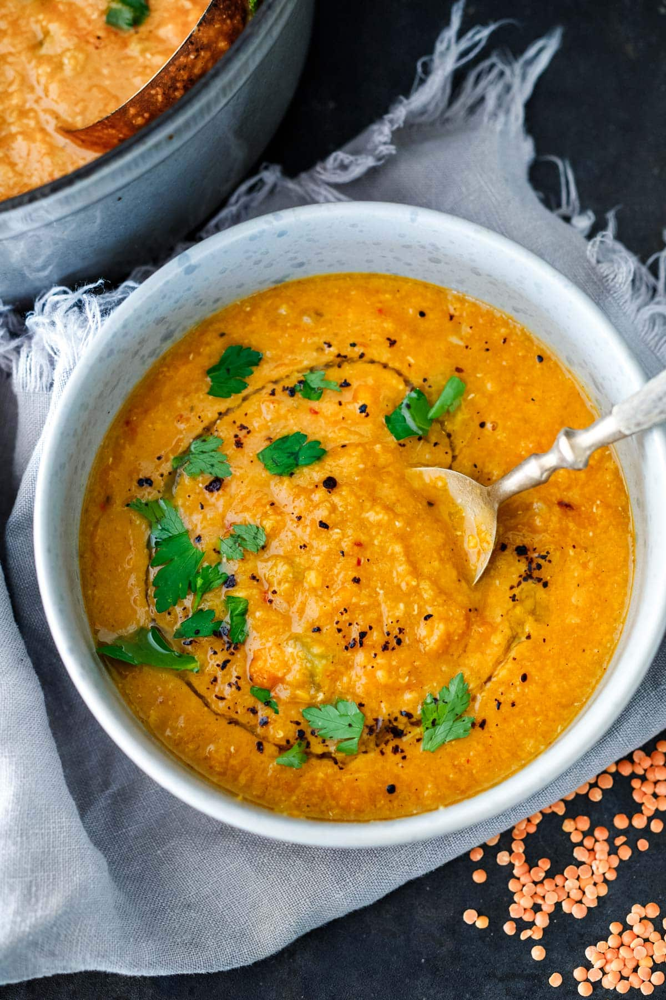

Red Lentil Soup

Ingredients
- Extra virgin olive oil - 4 tablespoons.
- White onions - x2 medium, peeled and diced.
- Garlic - x6 cloves, crushed.
- Carrots - x4 to 6, peeled and diced.
- Potatoes - x2 medium, peeled and diced.
- Tomato puree - x4 tablespoons, heaped.
- Aleppo pepper - x4 teaspoons.
- Salt - x1 teaspoon.
- Cumin powder - x2 teaspoons.
- Coriander powder - 1x teaspoon.
- Red lenils - 2 cups, washed.
- Chicken stock or broth - 3L
Method
- In a large pan, heat using mercury ball technique, then add oil and onions.
- Cook onions until softened.
- Add the garlic, aleppo pepper, salt, cumin powder, coriander powder, carrots and potatoes and cook for 5-7 mins.
- Add the lentils and chicken stock/broth, bring to boil.
- Boil for 4 - 5 mins, taste it to check salt levels, then lower heat and cover with lid. Leave a small opening.
- Simmer on lowest heat setting for 15-20 mins. Stir every 5 mins.
- Taste again to check salt levels. If it's good, then it is now ready to blend.
- Serve with a garnish of fresh coriander.
Home